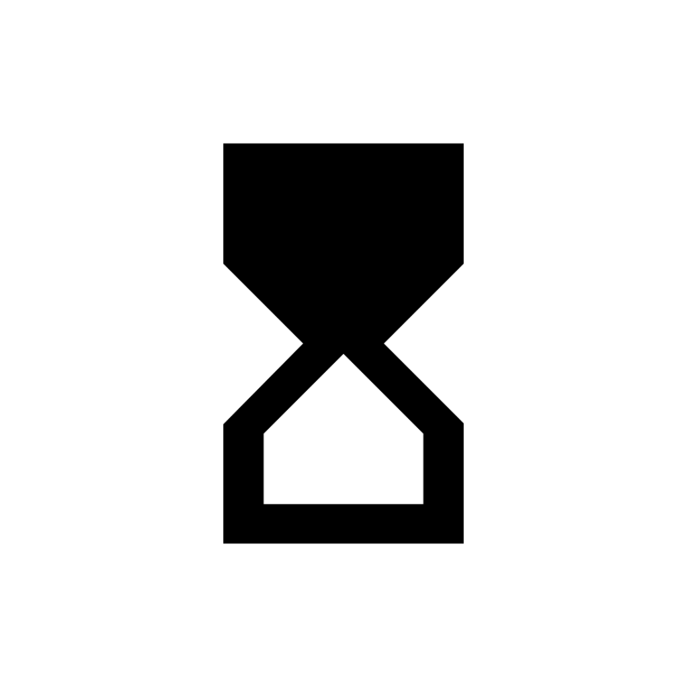
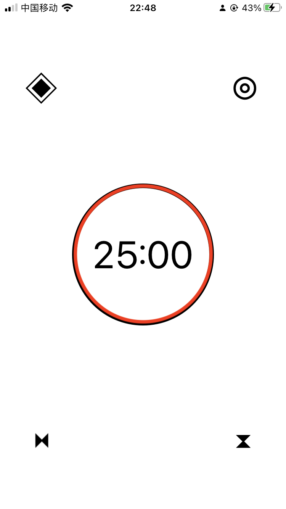
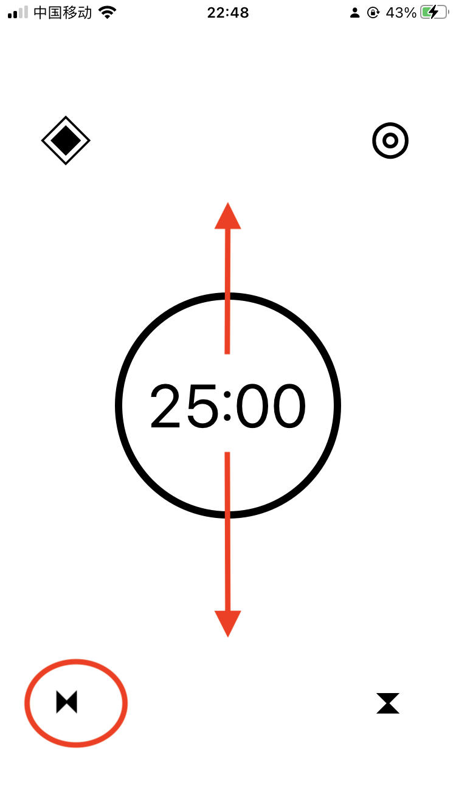
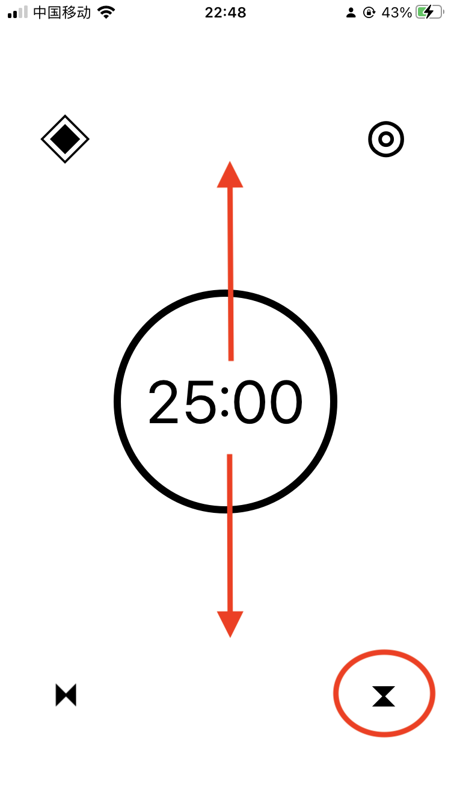
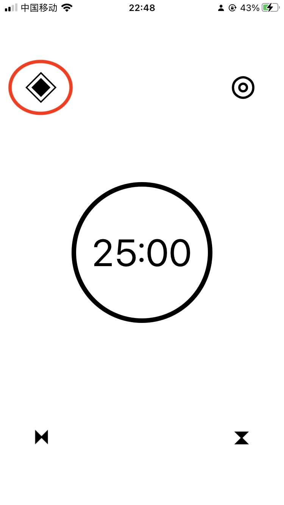
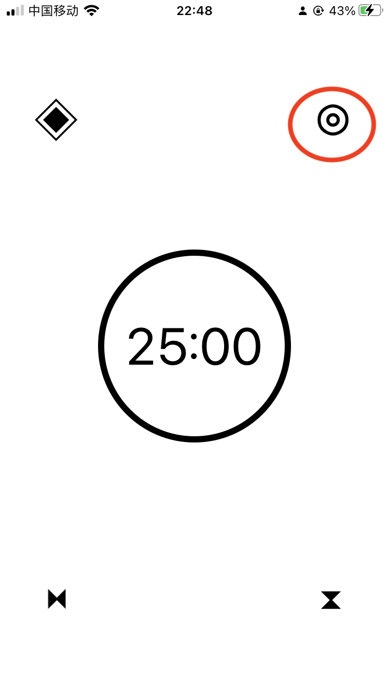

JustTimer
JustTimer
If you have any questions regarding this "JustTimer" app, please email me.
Start the timer by tapping the circle, which is also a progress bar, in the middle.

Switch to rest mode by tapping the bottom left hourglass.
adjust time in the according mode by swiping up and down the screen.

Switch back to normal mode by tapping the bottom right hourglass.
adjust time in the according mode by swiping up and down the screen.

change appearance by tapping the upper left button


reset everything to default by tapping the upper right button
